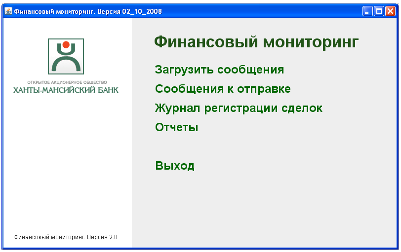
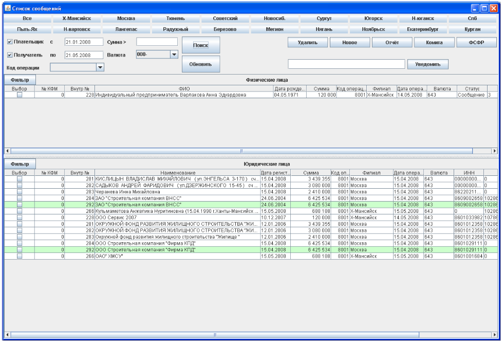
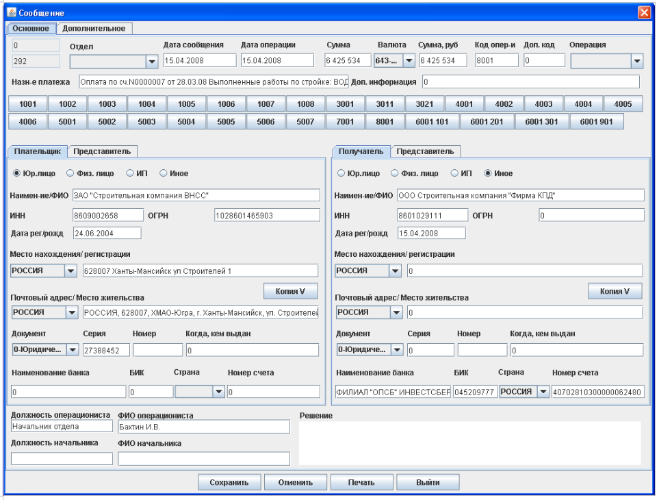

Для реализации требований, сформулированных Центральным Банком в положении о порядке представления кредитными организациями в уполномоченный орган сведений, предусмотренных Федеральным законом “О противодействии легализации (отмыванию) доходов, полученных преступным путем, и финансированию терроризма” была разработана система "Финансовый мониторинг", автоматизирущая рабочее место специалиста отдела финансового мониторинга. Система имеет отличающийся фунционал для работников филиала и головного офиса. Система позволяет регистрировать (загружать) сообщения о сомнительных операциях и создавать необходимую отчетность. Система построена на трехзвенной архитектуре, в которой роль клиента исполняет настольное swing-приложение, сервера - JBoss Application Server, базы данных - Oracle 10i. Главное окно системы:  Форма списка сообщений:  Форма сообщения:  |